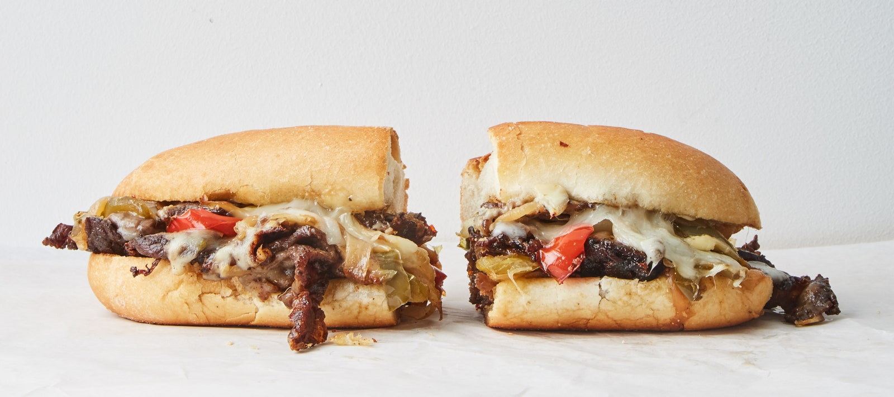

Cheesesteak

Homemade cheesesteak (Credit Brad Leone and Chris Morocco)
Ingredients
- Olive oil
- 4 large onions, sliced
- 3 large red and green bell peppers, sliced
- 2 kg boneless beef short ribs
- 8 10 inch long Italian sub rolls
- kosher salt and freshly ground black pepper
- 500g provolone cheese
Steps
- Heat oil in a large pot over medium-high. Add onions and bell peppers and season generously with salt and black pepper. Cook, stirring often at first then only occasionally as vegetables soften, adjusting heat as needed and adding a splash or so of water if vegetables are browning too quickly, until golden brown and very tender, 25–30 minutes.
- Remove pot from heat, add vinegar, and give everything a good stir. Taste and season with more salt if needed.
- Place short ribs on a parchment-lined rimmed baking sheet and freeze, uncovered, until firm around the edges but still yielding in the center, 45–60 minutes.
- Cut short ribs in half crosswise, then lengthwise into very thin slices. (It’s better to have thinner, less-regular slices than thick, even slices. Either way, don’t stress; whatever you do will be more than fine.) Divide meat into 8 portions (about 8 oz. each), using sheets of parchment paper or plastic wrap as dividers.
- Slice bread in half lengthwise, keeping a long side intact. Heat a large griddle across 2 burners over medium—a flick of water should sizzle on contact. (Or use a large cast-iron skillet and cook 1 portion at a time.) Lightly coat griddle with oil. Place 2 portions of meat (about 1 lb.) on griddle; season generously with salt and pepper. Cook, pressing down and pulling slices apart using 2 metal spatulas, until halfway cooked through (you should still see some raw spots). Scoot meat into 2 oblong portions no more than 1" high and top with some onion–bell pepper mixture. Top with 2 slices American cheese and 2 slices provolone cheese per pile. Cook, undisturbed, until meat is browned and crisp underneath and cheese is melted, about 4 minutes. Transfer each portion to a roll; slice in half crosswise. Repeat with remaining ingredients. Serve topped as desired.